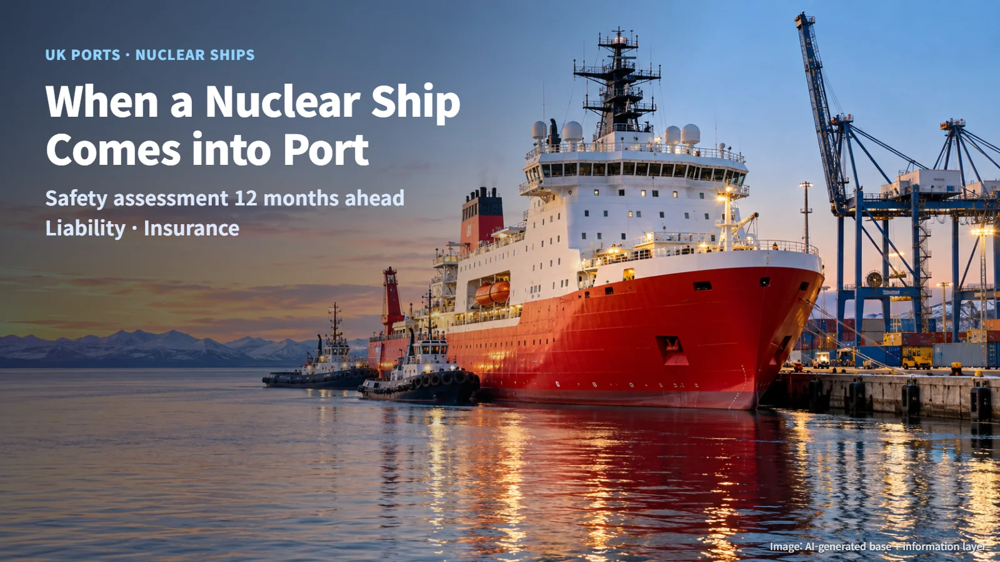
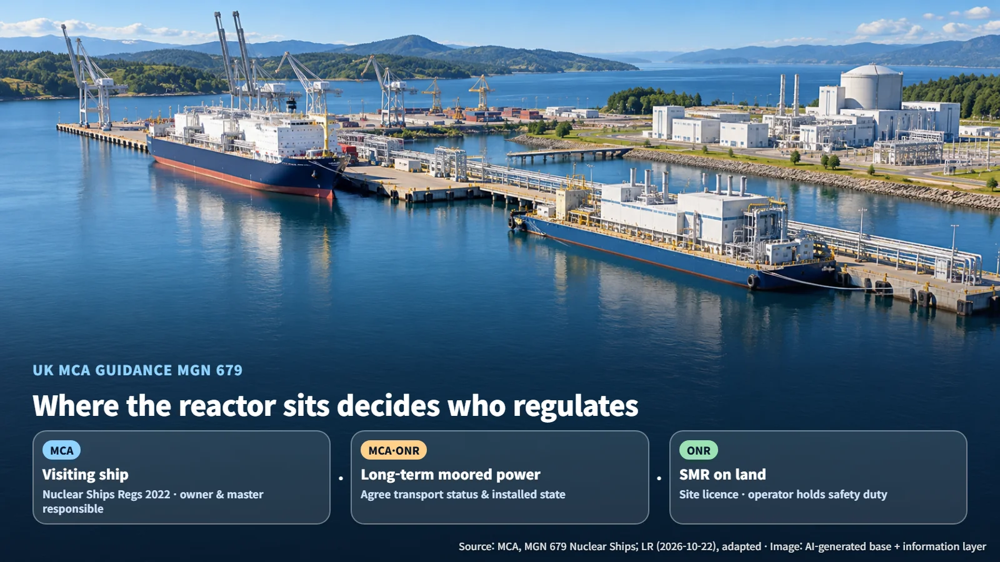
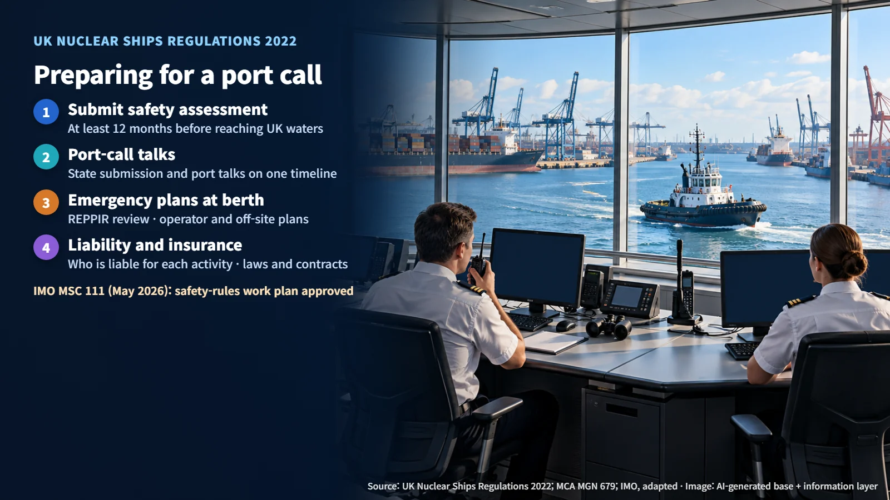
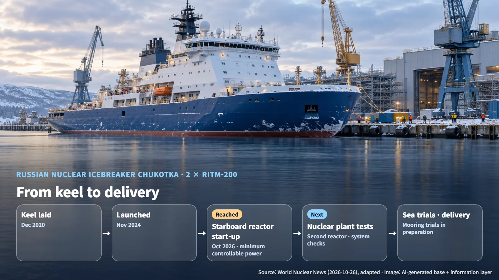

UK & Russia · Nuclear Ships
When a Nuclear Ship Comes into Port: UK Port Readiness and the Icebreaker Chukotka
A Lloyd's Register and British Ports Association report sets out what ports need before nuclear ships arrive, while Russia's icebreaker Chukotka starts its first reactor.
If a ship carrying a reactor sails into port, who checks that it is safe, and who answers for an accident? In October 2026 two unrelated stories offered a view of both sides of that question. In the United Kingdom, a report examined how ports can prepare for nuclear power. In Russia, the first reactor on a nuclear icebreaker was started up. One story shows the port side of the preparation; the other shows the ship side.
In October 2026, Lloyd's Register (LR) and the British Ports Association (BPA) published a joint report naming regulatory alignment, liability, insurance, emergency response and workforce as the main conditions for adoption. This article looks at the detailed requirements through the UK government's own guidance and regulations.

A Reactor Arrives by Sea: Three Cases and the Bodies in Charge
Beyond receiving nuclear-powered ships, LR also proposed nuclear energy for port power, shore power (equipment that supplies electricity from land to a berthed ship) and industrial heat. Splitting the possibilities into three cases shows how the regulatory responsibilities change:
- A visiting ship: when a reactor is installed in a means of transport, The Merchant Shipping (Nuclear Ships) Regulations 2022 are the main framework. The shipowner and master are responsible, and the state inspects the safety assessment, certificates and operating records.
- A long-term moored power source: the operator works out with the Maritime and Coastguard Agency (MCA) and the Office for Nuclear Regulation (ONR) whether the unit counts as a means of transport and what its installed state is.
- A small modular reactor on land: an ONR site licence is required, and the operator carries safety responsibility.
(Source: MCA, MGN 679 Nuclear Ships, adapted)
In practice, the same reactor answers to different bodies and different accountable parties depending on whether it sits on a ship or is fixed to land. The actual legal classification is settled by how the unit operates and how it is installed. Inside the port, the Duty Holder carries ultimate responsibility for safety, and the Designated Person independently checks the Marine Safety Management System (MSMS). When a nuclear ship approaches the quay, the ship's side, the port's side and the national regulators each bring their own share of the job to the same meeting.

Starting 12 Months Before Arrival: Safety Assessment and Emergency Planning
Regulation 13(5) of The Merchant Shipping (Nuclear Ships) Regulations 2022 requires the safety assessment to be provided to the Secretary of State for Transport at least 12 months before the ship arrives in UK waters. The safety assessment evaluates the radiation and other hazards of the reactor and the ship, and it must be kept up to date and on board. A port call therefore becomes a schedule in which documents move back and forth more than a year in advance, and the operator plans its submission to the state and its talks with the port on a single timeline.
When radiation-related work takes place on a ship fixed at its moorings, the Radiation (Emergency Preparedness and Public Information) Regulations (REPPIR) are reviewed for applicability, by comparing quantities such as fissile material against the thresholds set in the regulations. The documents needed include a hazard evaluation, an operator's emergency plan, an off-site emergency plan linked to public protection, and records of crew competence. The Ports and Marine Facilities Safety Code then has this system checked through exercises and independent audits.

International rules are moving as well. The current UK Nuclear Code is based on pressurised water reactors, and the MCA reviews other reactor types case by case. In May 2026, at MSC 111, the International Maritime Organization (IMO) approved a work plan for developing safety rules that cover nuclear power among other topics. The work is at the stage where schedule and scope have been set; once amendments are produced, the way ships with new reactor types are reviewed may change.
Who Pays If Something Goes Wrong: Liability and Insurance
The IMO's 1971 Convention relating to Civil Liability in the Field of Maritime Carriage of Nuclear Material deals with the overlap between the liability of nuclear installation operators and liability in maritime carriage. Where an installation operator is liable for damage under the Paris or Vienna Conventions or similar national law, the key question is how that liability is reconciled with liability on the carriage side.
A port's insurance review therefore starts by mapping which activity sends liability to whom. Operating a propulsion reactor, carrying nuclear material as cargo, berthing work and running a shore facility each need their applicable law and contracts examined separately. The exercise amounts to drawing, in advance, the route a claim would follow after an accident. Specific insurance products, limits and premiums have not been disclosed.
LR also proposed a staged readiness model: nuclear-aware, nuclear-ready, nuclear-enabled and nuclear energy hub. The idea is to build evidence and capability first, before committing large amounts of capital.
How Far Has a Real Ship Come? Chukotka's Reactor Start-up
Separately from the UK discussion, the nuclear icebreaker Chukotka is under construction at Baltic Shipyard in Russia. World Nuclear News reported on 26 October 2026 that the ship's starboard reactor reached the minimum controllable power level, the lowest power at which the chain reaction can be controlled using instruments. Chukotka is the fifth vessel in the Project 22220 series and a follow-on ship that will provide icebreaking support on Arctic shipping routes.
The ship carries two RITM-200 reactors, each with a thermal output of 175 MWth. Calculating 175 × 2 gives about 350 MWth; that figure is total thermal output, while electrical output and propeller-shaft power are separate values. With a design life of 40 years and a refuelling interval of 7 years, the calculation 40 ÷ 7 ≈ 5.7 works out to about five refuellings over the ship's life. Counting from keel-laying in December 2020 to launch in November 2024, and from launch to the first reactor start-up in October 2026, the calculation gives about 4 years and about 2 years respectively.
The next steps are starting up the second reactor, checking the instrumentation, control, protection and monitoring systems, and testing the nuclear installation on board. The ship is now preparing for mooring trials and shipyard sea trials, after which delivery and operation follow. The test records built up at each stage become the evidence that explains the ship's safety.

A nuclear ship's arrival in port is a job that the ship, the port, the regulators and the insurers prepare together. Next time you read news about a nuclear-powered vessel, ask what the port that will receive it has prepared; the story becomes much more three-dimensional.